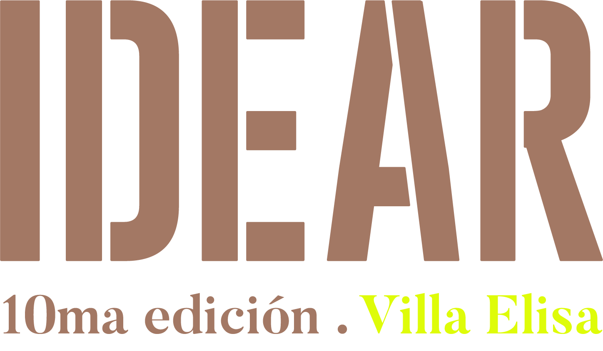
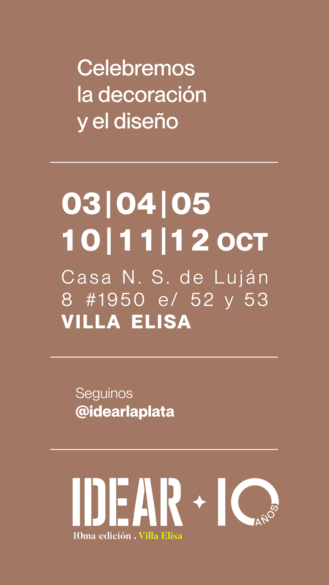
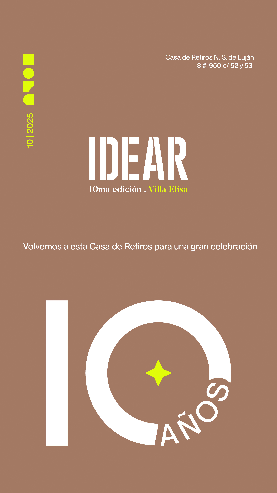

<div class="d-none d-md-block my-1 px-2 text-center position-relative" style="z-index:10;">      <span class="scrolling-text" style="
        display:inline-block;
        white-space:nowrap;
        background: linear-gradient(90deg,rgba(213,0,0,0.85),rgba(255,23,68,0.85),rgba(255,138,101,0.85));
        color: #fff;
        font-weight: bold;
        font-size: 1.4em;
        padding: 0.5em;
        border-radius: 1em;
        box-shadow: 0 2px 12px #d5000033;
        text-shadow: 2px 2px 8px #fff, 0 2px 8px #d5000055;
        letter-spacing: 1px;
        opacity: 0.92;
        animation: scroll-left 18s linear infinite;
      ">
         12 de Octubre: último día - Expo IDEAR "Celebración 10 años" - Casa Nuestra Señora de Luján, Villa Elisa
      </span>
    </div>
    <style>
      @keyframes scroll-left {
        0% { transform: translateX(100%); }
        100% { transform: translateX(-100%); }
      }
    </style>
  </div>


  <div class="card card-idear mx-auto my-5">
  <div class="card-body text-center">
    <div class="logo-wrapper-idear">
      
    </div>
    <h5 class="title-idear">Expo IDEAR — Celebración 10 Años</h5>
    <p class="text-idear">
      Último día de la exposición en <strong>Casa Nuestra Señora de Luján</strong>, Villa Elisa.
    </p>
    <div class="badges-idear">
      <span class="badge-idear"><i class="material-icons">calendar_today</i> 12 de Octubre</span>
      <span class="badge-idear"><i class="material-icons">location_on</i> Villa Elisa</span>
    </div>
    <div class="actions-idear">
      <a href="https://idearlaplata.com.ar/" class="btn-idear" target="_blank" style="line-height: 1.1;">
      <i class="material-icons">language</i> Ver Sitio Web
      </a>
      <a href="https://idearlaplata.com.ar/plano.html" class="btn-outline-idear" target="_blank" style="line-height: 1.1;">
      <i class="material-icons">map</i> Ver Plano
      </a>
    </div>
    <div class="mt-3 d-flex justify-content-center">
      <a href="https://www.instagram.com/idearlaplata/" class="btn-outline-idear w-100" target="_blank" style="max-width:320px;">
      <i class="fab fa-instagram"></i> Instagram Expo IDEAR
      </a>
    </div>
  </div>
</div>


<style>
.card-idear {
  max-width: 500px;
  background: rgba(255,255,255,0.8);
  backdrop-filter: blur(12px);
  border-radius: 28px; /* pilled */
  border: 1px solid rgba(0,0,0,0.08);
  box-shadow: 0 6px 18px rgba(0,0,0,0.1);
  padding: 2rem 1.5rem;
  transition: all 0.35s ease;
}
.card-idear:hover {
  transform: translateY(-6px);
  box-shadow: 0 12px 28px rgba(0,0,0,0.18);
}

/* Logo */
.logo-wrapper-idear {
  background: radial-gradient(circle at center, rgba(106,27,154,0.15), transparent 70%);
  border-radius: 50%;
  display: inline-block;
  padding: 1rem;
  margin-bottom: 1rem;
  animation: float-idear 3s ease-in-out infinite;
}
.logo-idear {
  max-height: 80px;
  width: auto;
  filter: drop-shadow(0 2px 4px rgba(0,0,0,0.1));
}
@keyframes float-idear {
  0%, 100% { transform: translateY(0); }
  50% { transform: translateY(-4px); }
}

/* Textos */
.title-idear {
  font-size: 1.25rem;
  font-weight: 700;
  color: #2b2b2b;
  margin-bottom: 0.75rem;
}
.text-idear {
  color: #444;
  font-size: 0.95rem;
  margin-bottom: 1.5rem;
}

/* Badges */
.badges-idear {
  display: flex;
  justify-content: center;
  gap: 0.6rem;
  flex-wrap: wrap;
  margin-bottom: 1.5rem;
}
.badge-idear {
  background: rgba(33,150,243,0.15); /* celeste translúcido */
  color: #1565c0;
  font-weight: 500;
  border-radius: 50px; /* pilled */
  padding: 0.4rem 0.9rem;
  display: inline-flex;
  align-items: center;
  gap: 0.4rem;
  font-size: 0.85rem;
}

/* Botones */
.actions-idear {
  display: flex;
  justify-content: center;
  gap: 1rem;
}

.btn-idear,
.btn-outline-idear {
  display: inline-flex;
  align-items: center;
  justify-content: center;
  gap: 0.4rem;
  padding: 0.7rem 1.4rem;
  font-size: 0.9rem;
  border-radius: 999px; /* pilled */
  font-weight: 600;
  text-decoration: none;
  transition: all 0.3s ease;
}
.btn-idear {
  background: linear-gradient(135deg, #7e57c2, #6a1b9a);
  /* 👆 Cambiá esta línea por un gradiente que incluya tu naranja */
  color: #fff;
  box-shadow: 0 4px 10px rgba(106,27,154,0.25);
}

.btn-idear:hover {
  background: linear-gradient(135deg, #6a1b9a, #4a148c);
  color: orange;
  box-shadow: 0 6px 14px rgba(106,27,154,0.35);
  transform: translateY(-2px);
}
.btn-idear:active {
  transform: translateY(0);
}

.btn-outline-idear {
  border: 2px solid #2196f3;
  color: #1565c0;
  background: transparent;
}
.btn-outline-idear:hover {
  background: #ee6b0d;
  color: #fff;
  box-shadow: 0 4px 10px rgba(33,150,243,0.25);
}
.btn-outline-idear:active {
  transform: translateY(0);
}

.material-icons {
  font-size: 18px;
  vertical-align: middle;
}
</style>


<div class="d-block d-md-none my-1 px-2 text-center position-relative" style="z-index:10;">
  <div style="position: absolute; top: 12px; left: 50%; transform: translateX(-50%); z-index:10;">
    <marquee behavior="scroll" direction="left" scrollamount="7" style="width:100%;">
      <span style="
        background: linear-gradient(90deg,rgba(213,0,0,0.85),rgba(255,23,68,0.85),rgba(255,138,101,0.85));
        color: #fff;
        font-weight: bold;
        font-size: 1.4em;
        padding: 0.2em;
        border-radius: 1em;
        box-shadow: 0 2px 12px #d5000033;
        text-shadow: 2px 2px 8px #fff, 0 2px 8px #d5000055;
        letter-spacing: 1px;
        display: inline-block;
        opacity: 0.92;
      ">
         12 de Octubre: último día - Expo IDEAR "Celebración 10 años" - Casa Nuestra Señora de Luján, Villa Elisa

      </span>
    </marquee>
  </div>
  
</div>


<section class="idear-triptych my-1 px-1" id="idear">
  <div class="triptych-wrapper triptych-uniform">
    <!-- Panel 1 (oculto en mobile) -->
    <figure class="panel panel-side">
      
    </figure>

    <!-- Panel 2 (Video) -->
    <figure class="panel panel-video"> 
      <div class="video-shell" data-video-wrapper>
        <button class="play-btn" aria-label="Reprodu</figure>cir video" id="idearPlayBtn">
          <span class="material-icons">play_arrow</span>
        </button>
        <video
          class="triptych-video"
          preload="none"
          playsinline
          controls
          autoplay
          id="idearVideo"
          poster="./idear/poster1.jpg"
        >
          <source data-src="./idear/Reel_Fechas.mp4" type="video/mp4">
          Tu navegador no soporta este formato de video.
        </video>
        <script>
        (function(){
          const v = document.getElementById('idearVideo');
          const btn = document.getElementById('idearPlayBtn');
          if(!v || !btn) return;
          let started = false;
        
          function ensureLoaded(){
            if(!v.dataset.loaded){
              const s = v.querySelector('source[data-src]');
              if(s){
                s.src = s.dataset.src;
                s.removeAttribute('data-src');
              }
              v.load();
              v.dataset.loaded = 'true';
              v.classList.add('is-loaded');
            }
          }
        
          btn.addEventListener('click', () => {
            ensureLoaded();
            v.play().then(() => {
              btn.classList.add('is-hidden');
            }).catch(()=>{
              btn.classList.remove('is-hidden');
            });
          });
        
          v.addEventListener('play', () => {
            btn.classList.add('is-hidden');
          });
          v.addEventListener('pause', () => {
            if (v.currentTime < 0.2) btn.classList.remove('is-hidden');
          });
        
          const io = new IntersectionObserver(entries=>{
            entries.forEach(e=>{
              if(e.isIntersecting && !started){
                started = true;
                ensureLoaded();
                v.muted = false;
                v.play().then(()=>{
                  btn.classList.add('is-hidden');
                }).catch(()=>{
                  btn.classList.remove('is-hidden');
                });
                io.disconnect();
              }
            });
          },{threshold:0.45, rootMargin:'40px'});
        
          io.observe(v);
        })();
        </script>
      </div>
    </figure>

    <!-- Panel 3 (oculto en mobile) -->
    <figure class="panel panel-side">
      
    </figure>
  </div>
</figure>

<style>
/* Mobile: mostrar solo el video ocupando todo el contenedor */
@media (max-width: 767.98px) {
  #idear .triptych-wrapper {
    display:block;
    padding:0;
    background:transparent;
    border:none;
    box-shadow:none;
  }
  #idear .panel-side { display:none !important; }
  #idear .panel-video {
    border-radius:0;
    aspect-ratio:auto;
    width:100%;
    height:100%;
    min-height:70vh; /* ajusta si querés más/menos alto */
    margin:0;
  }
  #idear .panel-video .video-shell,
  #idear .panel-video .triptych-video {
    width:100%;
    height:100%;
  }
  #idear .panel-video .triptych-video {
    object-fit:cover;
  }
  #idear .play-btn {
    /* centrar mejor en full height */
    transform:translateY(0);
  }
}
</style>

<style>
.idear-triptych {
  max-width: 1200px;
  margin: 0 auto;
}
.triptych-wrapper {
  --panel-ratio: 9/16; /* misma relación para imágenes y video */
  display: grid;
  gap: clamp(6px,1.2vw,14px);
  grid-template-columns: repeat(auto-fit,minmax(230px,1fr));
  background: radial-gradient(circle at 30% 30%, rgba(255,255,255,.55), rgba(255,255,255,.08));
  backdrop-filter: blur(18px) saturate(140%);
  -webkit-backdrop-filter: blur(18px) saturate(140%);
  border: 1px solid rgba(255,255,255,0.35);
  border-radius: 30px;
  padding: clamp(10px,2vw,26px);
  box-shadow:
    0 10px 25px -8px rgba(0,0,0,.25),
    0 2px 8px rgba(0,0,0,.15),
    inset 0 0 0 1px rgba(255,255,255,.25);
  overflow: hidden;
  position: relative;
}
.triptych-wrapper:before,
.triptych-wrapper:after {
  content:"";
  position:absolute;
  width:280px;
  height:280px;
  background: radial-gradient(circle,#ffffff55,#ffffff05 70%);
  top:-60px;
  right:-40px;
  filter: blur(18px);
  pointer-events:none;
}
.triptych-wrapper:after {
  left:-40px;
  top:auto;
  bottom:-70px;
  background: radial-gradient(circle,#b1d5ff66,#ffffff05 70%);
}
.panel {
  margin:0;
  position:relative;
  border-radius: 22px;
  overflow:hidden;
  display:flex;
  align-items:center;
  justify-content:center;
  background: linear-gradient(145deg,#ffffff30,#ffffff10);
  box-shadow: 0 4px 14px -4px rgba(0,0,0,.35), inset 0 0 0 1px rgba(255,255,255,.25);
  aspect-ratio: var(--panel-ratio);
}
.panel img,
.triptych-video {
  width:100%;
  height:100%;
  object-fit:cover; /* igual altura y relleno */
  display:block;
}
.video-shell {
  position:relative;
  width:100%;
  height:100%;
}
.play-btn {
  position:absolute;
  inset:0;
  margin:auto;
  width:70px;
  height:70px;
  border-radius:50%;
  border:none;
  background:linear-gradient(135deg,#6d28d9,#9333ea);
  color:#fff;
  display:flex;
  align-items:center;
  justify-content:center;
  font-size:40px;
  cursor:pointer;
  box-shadow:0 8px 18px -6px rgba(109,40,217,.55);
  transition:.3s;
  z-index:2;
}
.play-btn:hover {
  transform:scale(1.08);
  box-shadow:0 10px 24px -4px rgba(109,40,217,.6);
}
.play-btn:active { transform:scale(.95); }
.play-btn.is-hidden { opacity:0; pointer-events:none; }
.triptych-video {
  opacity:0;
  transition:opacity .5s ease;
  background:#000;
}
.triptych-video.is-loaded { opacity:1; }
@media (max-width:900px) {
  .triptych-wrapper { --panel-ratio: 10/16; }
}
@media (max-width:620px) {
  .triptych-wrapper {
    grid-template-columns:1fr;
    --panel-ratio: 16/9;
  }
  .play-btn { width:64px; height:64px; font-size:38px; }
}
</style>

<script>
(function() {
  const video = document.querySelector('[data-video]');
  if (!video) return;
  const source = video.querySelector('source[data-src]');
  const btn = document.querySelector('[data-video-trigger]');

  function loadVideo() {
    if (video.dataset.loaded) return;
    if (source && source.dataset.src) {
      source.src = source.dataset.src;
      source.removeAttribute('data-src');
    }
    video.load();
    video.dataset.loaded = 'true';
    video.classList.add('is-loaded');
  }

  const io = new IntersectionObserver(entries => {
    entries.forEach(e => {
      if (e.isIntersecting) {
        loadVideo();
        io.disconnect();
      }
    });
  }, { rootMargin: '120px' });
  io.observe(video);

  btn.addEventListener('click', () => {
    loadVideo();
    btn.classList.add('is-hidden');
    video.play().catch(()=>{});
  });

  video.addEventListener('play', () => btn.classList.add('is-hidden'));
  video.addEventListener('pause', () => {
    if (video.currentTime < 0.2 && video.paused) btn.classList.remove('is-hidden');
  });
})();
</script>